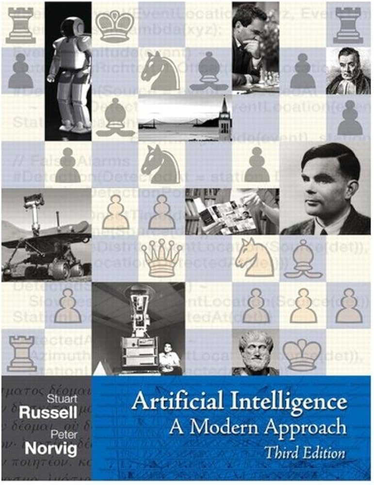

Recursos para Aprender sobre Inteligencia Artificial
Encuentra videos, libros y materiales relevantes para profundizar tus conocimientos en IA y sus aplicaciones.
Videos Recomendados
Introducción a la IA: Conceptos básicos y su impacto.
Aprendizaje Automático: Fundamentos y ejemplos prácticos.
Ética en la Inteligencia Artificial: Retos y perspectivas.
Libros Recomendados
Artificial Intelligence: A Modern Approach - Este libro ofrece una introducción exhaustiva a los conceptos fundamentales de la inteligencia artificial.
Deep Learning - Explora los conceptos de aprendizaje profundo con aplicaciones prácticas y ejemplos.